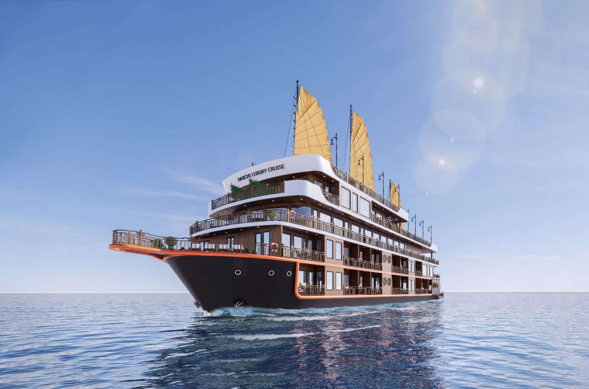

Lan Ha Bay 5★ Overnight Cruise
Sleep on the bay aboard a 32-suite ship where every room has its own balcony. Check-in 12:00 at Got Pier (Hai Phong); kayaking the Light & Dark caves, a cooking class, afternoon tea and sunrise on the sundeck.

Book 5★ cabin now → Daiichi Cruise Homepage
2026–2027 rates (VAT included)
| Service | Low season | High season |
|---|---|---|
| Deluxe Suite (2N1Đ / 2D1N) | 2.860.000₫ | — |
| Senior Suite (2N1Đ / 2D1N) | 3.250.000₫ | — |
| Executive Suite (2N1Đ / 2D1N) | 3.380.000₫ | — |
| Royal Suite VIP (3N2Đ / 3D2N) | 7.280.000₫ | — |
Daily departures
Check-in 12:00 — Got Pier, Hải Phòng
Frequently asked questions
How is the suite priced?
Per cabin (2 guests), excluding VAT and holiday surcharges. Book 30 days ahead for 12% off (EARLYBIRD12).
Where do I board?
Free central Cat Ba pickup; check-in 12:00 at Got Pier, Hai Phong. Hanoi limousine transfers can be added.
What’s on board?
Glass restaurant, spa, jacuzzi, glass skywalk, sundeck bar, kayaks and a private tender.